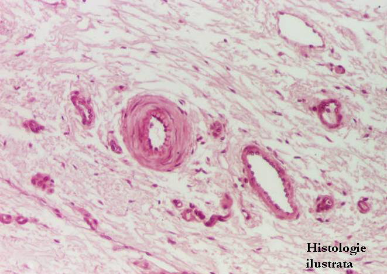
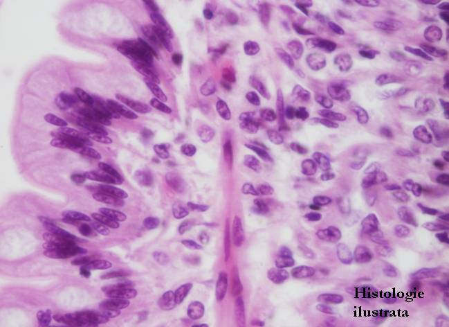
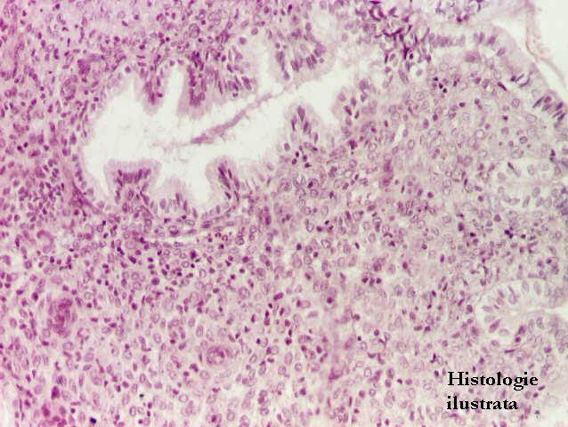
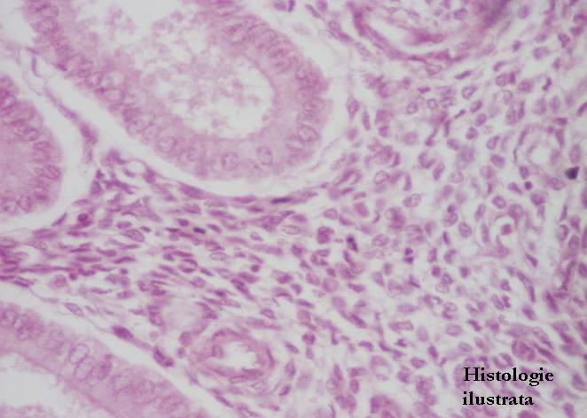
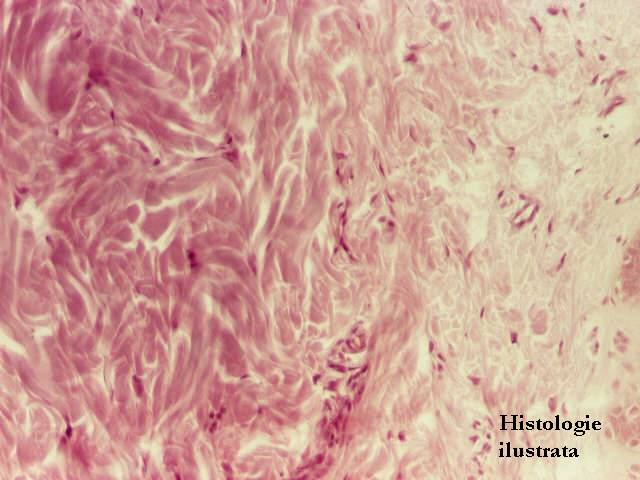
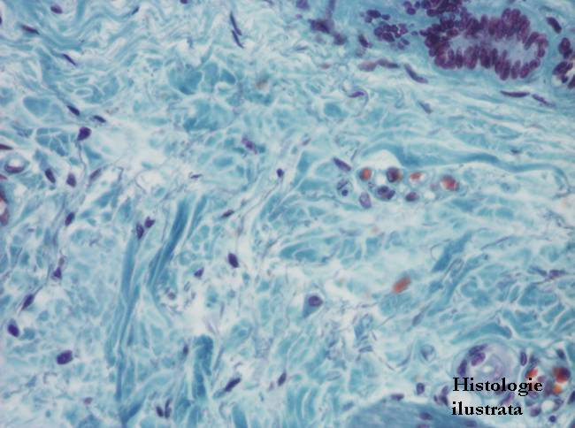
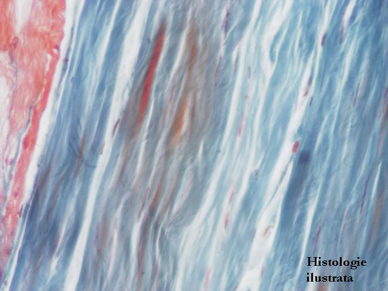

Chap.2 - Tissu conjonctif
2.2. Variétés de tissu conjonctif
Tissu conjonctif proprement dit




Fig. 80 - Tissu conjonctif lâche – sous-muqueuse de l'œsophage, H.E. X 100
Fig. 81- Chorion de défense – villosités intestinales, jéjunum, H.E. X 100
Fig. 82 - Chorion de défense – jéjunum,
H.E. X 400
Fig. 83 - Chorion cytogène – endomètre, H.E. X 200






Fig. 84 - Chorion cytogène – endomètre, H.E. X 400
Fig. 85 - Tissu conjonctif lâche et dense semi-ordonné – derme de la peau, H.E. X 100
Fig. 86 - Tissu conjonctif dense semi-ordonné – derme profond de la peau,
T.S. X 100
Fig. 87 - Tissu conjonctif dense ordonné – tendon,
T.S. X 200


Fig. 88 - Tissu conjonctif dense ordonné – cornée,
H.E. X 100